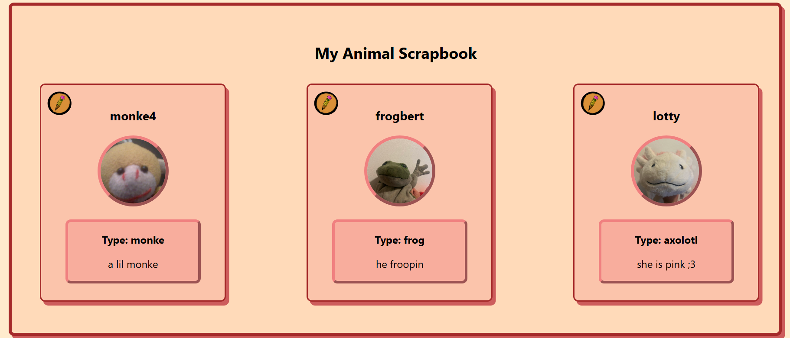
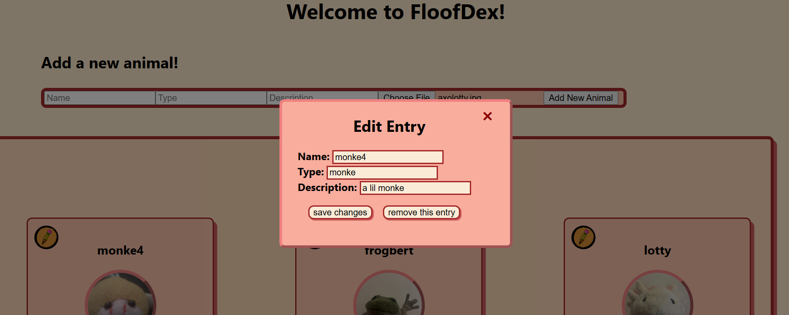
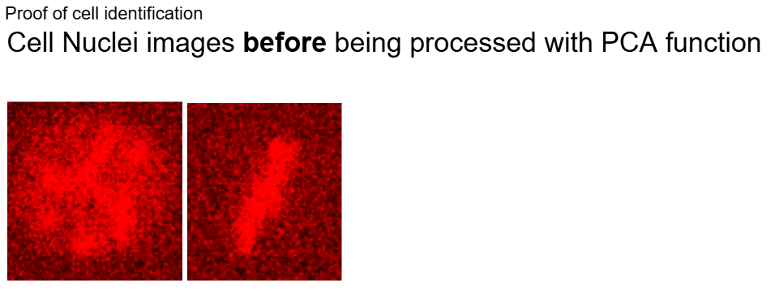
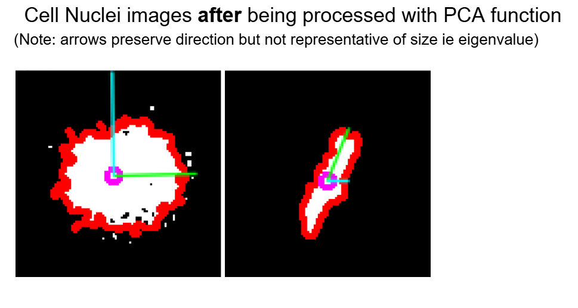

Projects
Stuffed Animal Scrapbook
Stuffed Animal Scrapbook
Languages/Frameworks: Python/Flask, React, SQL | Libraries: SQLAlchemy
Floofdex is a stuffed animal scrapbooking app that allows you to store photos in a much more creative and fun environment!
This application uses Python/Flask for backend CRUD operations with the front end React.js framework. Using SQL databases, I stored user data of stuffed animal entries and use its query functions to implement a search bar to look for entries. The current model stores images in an upload folder, however I plan to implement AWS S3 bucket storage to create a much more scalable platform for newer users in the future.
Database Manager: Flowerbase
Database Manager
Languages/Frameworks: Python, SQL | Libraries: Matplotlib, Pandas
This is a personal project I began working on throughout last summer and plan to finish by Summer 2025. A problem I wanted to solve was that smaller scale businesses often run their client list data and past transactions on slow running Microsoft Excel or CSV files. And not only that, the average business owner would need to hire a data analyst in order to graph out large amounts of data. I wanted to solve this by creating a Tableu-esque database manager that would not only convert Excel files into SQL datatables, but also be able to run queries on these tables and output nice graphs.Personal Website (This one!)
Personal Website
Languages/Frameworks: JavaScript, CSS, HTML | Icons/Buttons: Bootstrap
This is my first deployed website! I plan to add more functionality in the future by redeploying everything using React.js. A primary challenge with this site is that its been a while since I have coded using webdesign languages and frameworks. Its been a fun time looking through documentation and relearning everythingMedical Notification Service: OpenRx
OpenRx
Languages/Frameworks: React.js, Tailwind, Next.js | API: Twilio, Azure OCR, OpenAI
About my research!
Automatic Cell Tracking and Modeling
Reliably tracking bacteria cells in the modern era is still an arduous task as current commercial methods do not accurately track cell lineage and positions. Under Wayne Hayes Lab at UCI, I conduct research examining the best way to predict cell positioning and splitting using novel mathmatical and statistical methods such as PCA (principle component analysis) and linear interpolation in order to see if our software can get accurate readings of cell movement and lifecycles.
 Statistical Research of Health Apps
Under instructor Connie Pechmann at UCI, I am currently performing data analysis and data driven research regarding mobile health apps. I am compiling a report that offers insights into app design, UI/UX, and industry trends.
Contacts
linkedin: emiliolim | gmail: emilioarislim@gmail.com | instagram: @emilio_lim github: emiliolim